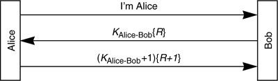

Networking Security Networking Security Networking Security Security Networking Security Networking Security Networking Charlie Kaufman Radia Perlman Mike Speciner Prentice Hall Network Security: Private Communication in a Public World, Second Edition
26.27. Homework
| 1. | Suppose you were able to observe ciphertext that you knew had been encrypted in CBC mode, and you saw that two ciphertext blocks, say c2 and c5, were equal. Why would this leak information? (Hint: look at Figure 4-5 and compare c1  c4 with m2 m5. What would happen if you knew one of the plaintexts, say m2?) c4 with m2 m5. What would happen if you knew one of the plaintexts, say m2?)
| | 2. | Suppose Alice and Bob negotiate a 64-bit key, and use the low-order 40 bits of it for encryption (for export reasons), and use the entire 64 bits for integrity protection. How much work would it be to brute-force break the key and construct a forged encrypted message using that key?
| | 3. | Consider the following protocol. Must the challenge be unpredictable, or is it sufficient to ensure Bob never chooses the same challenge twice, for instance, by using a sequence number?

|
| | 4. | As described in §26.3.1 The Splicing Attack, if a C-D conversation is being multiplexed over the same encryption-only tunnel as an A-B conversation, C and D can collude with a splicing attack in order to decrypt the A-B traffic. Suppose encryption is CBC with 64-bit blocks. Assume that the first 16 octets of the plaintext packet consist of the source and destination address, and the remainder of the packet is data. The splicing attack will allow D to see all but the first block of data, which will be garbled because of the splice. Explain why the first block will be garbled, and why subsequent blocks will not be. How can C create the ciphertext so that D will receive all of the data? (Hint: assume that it is legal to create a larger ciphertext packet than the one recorded.)
|
|